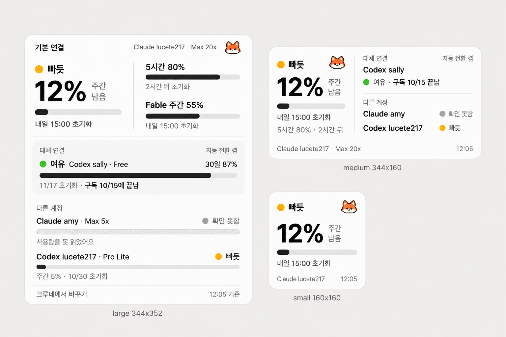
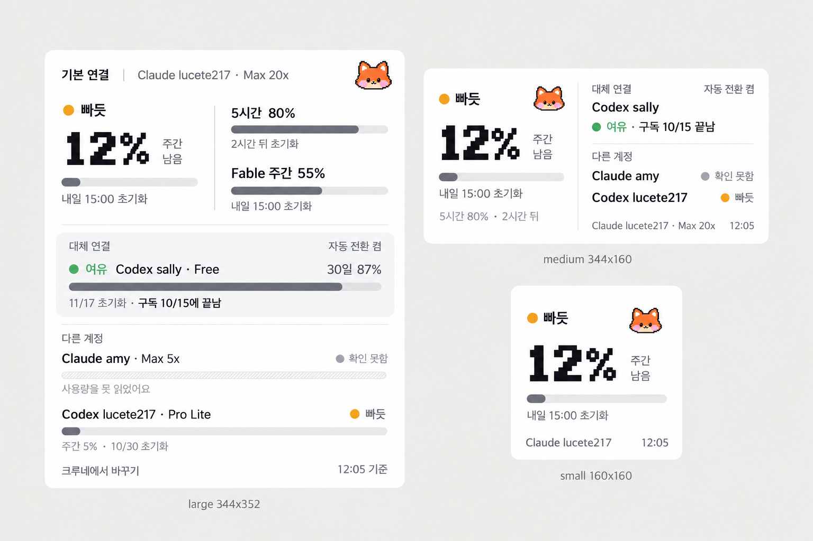
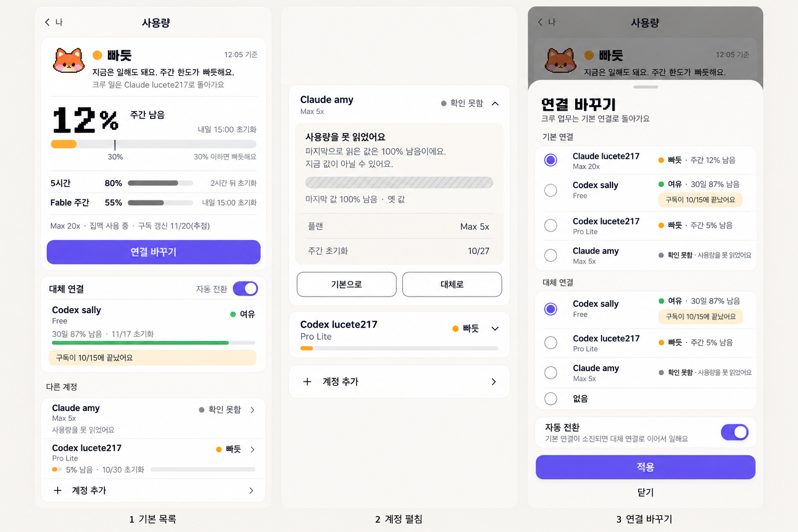

사용량 정보 구조와 시안
10월 23일 12시 실제 수치로 그렸습니다. 먼저 사람의 질문에서 정보 구조를 다시 잡고, 그 구조 그대로 위젯 두 가지와 크루네 화면을 그렸습니다.
1. 사람의 질문에서 시작한 구조
계정 네 개를 같은 무게로 나열하던 것이 답답함의 원인이었습니다. 이제 크기와 무게는 상태가 아니라 역할이 정합니다.
| 샐리의 질문 | 화면의 답 | 어디에 |
|---|---|---|
| 지금 크루에게 일 시켜도 돼? | 판정 한 단어와 가장 급한 한도 하나(12%). 한 화면에 큰 숫자는 하나뿐입니다. | 모든 크기 왼쪽 위 |
| 언제 풀려? | 판정 바로 아래 한 줄(내일 15:00 초기화). | 모든 크기 |
| 막히면 어떻게 돼? | 대체 연결 이름, 자동 전환 켬·끔, 구독이 끝났는지. | 중간 크기부터 |
| 다른 계정은 쓸 만해? | 한 줄에 상태 한 단어. 값을 못 읽은 계정은 숫자를 지우고 「사용량을 못 읽었어요」만 보입니다. | 큰 크기, 크루네 |
| 구독 갱신일, 사용 기기, 모델 | 바꿀 때만 필요해서 크루네 펼침 안으로 보냈습니다. | 크루네 펼침 |
- 역할 세 단계: 기본 연결(크게) > 대체 연결(중간) > 다른 계정(한 줄). 상태가 나빠도 후보는 커지지 않습니다.
- 상태는 점과 글자로 표시하고 색은 보조입니다. 색이 빠지는 모드에서도 똑같이 읽힙니다.
- 위젯은 보기 전용이고 정보는 두 단계까지입니다. 크루네의 보라색 단추는 화면당 하나입니다.
2-1. 위젯 · 얼굴만더 조용한 안
애플 위젯 기본 그대로, 루프 얼굴 한 점만 얹었습니다. 글꼴은 전부 시스템 글꼴입니다.

2-2. 위젯 · 얼굴과 픽셀 숫자추천
같은 구조에 큰 숫자 12%만 크루네 픽셀 글꼴로 바꿨습니다. 캐릭터와 글꼴 느낌이 모두 살짝 들어가는 안입니다.

3. 크루네 사용량 화면
큰 흰 카드(기본 연결), 중간 카드(대체 연결), 묶음 목록(다른 계정) 세 면으로 강약을 만들었습니다. 왼쪽부터 기본 목록, 계정 펼침, 연결 바꾸기입니다.

확인이 필요한 가정
- 시안의 기본 연결은 Claude lucete217, 대체 연결은 Codex sally, 자동 전환은 켬입니다. 실제 값은 크루네 설정에서 가져와야 하고, 아직 위젯으로 넘어오는 값이 아닙니다.
- 대체 연결이 없으면 대체 카드는 「대체 연결 없음 · 막히면 멈춰요」 한 줄로 바뀝니다.
- 크루네 화면의 보라색 라디오와 스위치, 초록 막대는 규격과 다르게 그려진 부분이라 구현 때 잉크색으로 맞춥니다.